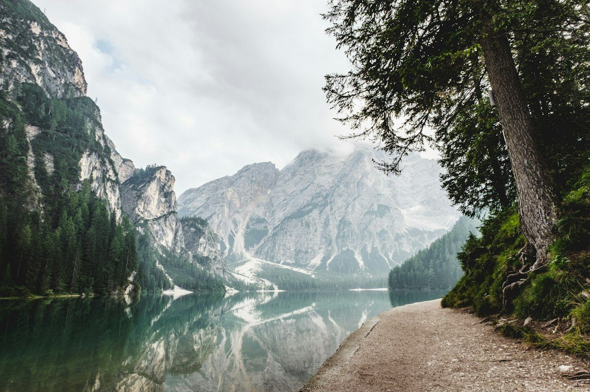

Nature
Paths, trees and mountain views.
A collection of nature, city and close-up photographs.

Paths, trees and mountain views.

Buildings and scenes from city life.

The shapes and textures of small objects.